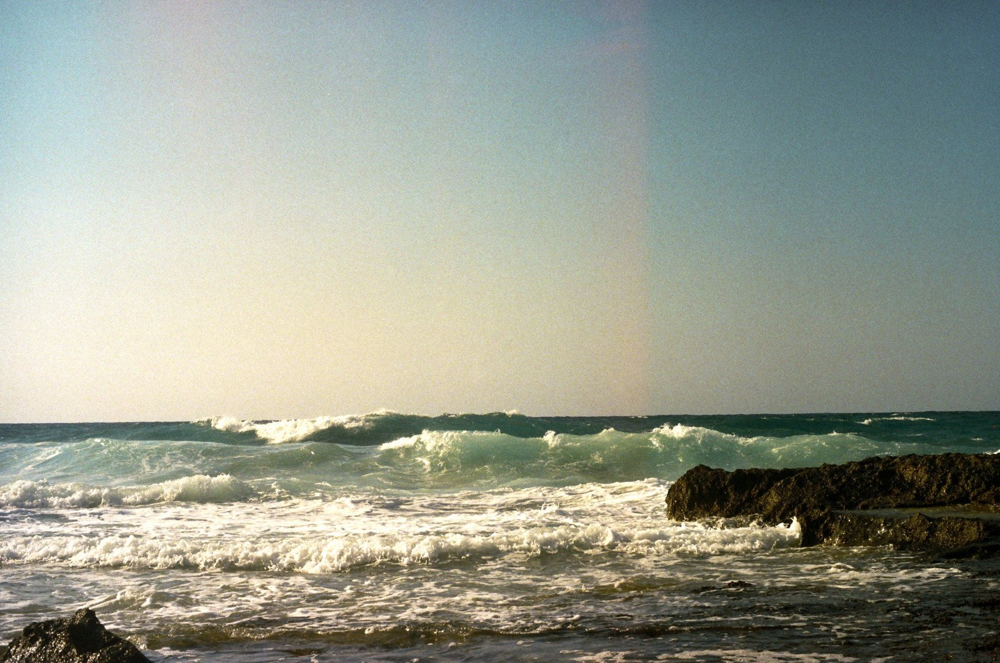
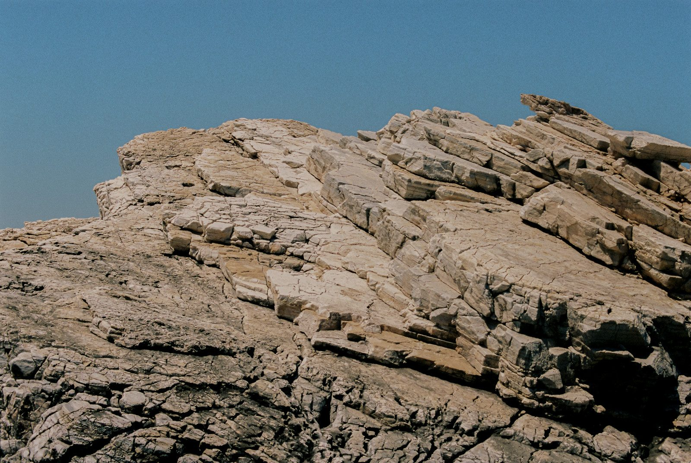

Program enablement and AI ethics, grounded in the belief that data should leave people better off. Currently studying data science at UC Berkeley.
See the workFrom the top of the mountain to a library by the shore: background, approach, projects, reading and contact.

FIG. 01 — THE CLIMB[ About ]
A part-time potter and full-time marketing enablement manager, studying data science and AI at UC Berkeley. I’m committed to building and measuring systems that serve public interests.
Now
MIDS
UC Berkeley
Before
META
× World Health Org.
Focus
AI ETHICS
& program enablement
Twenty-three books on my shelf, sorted by subject.